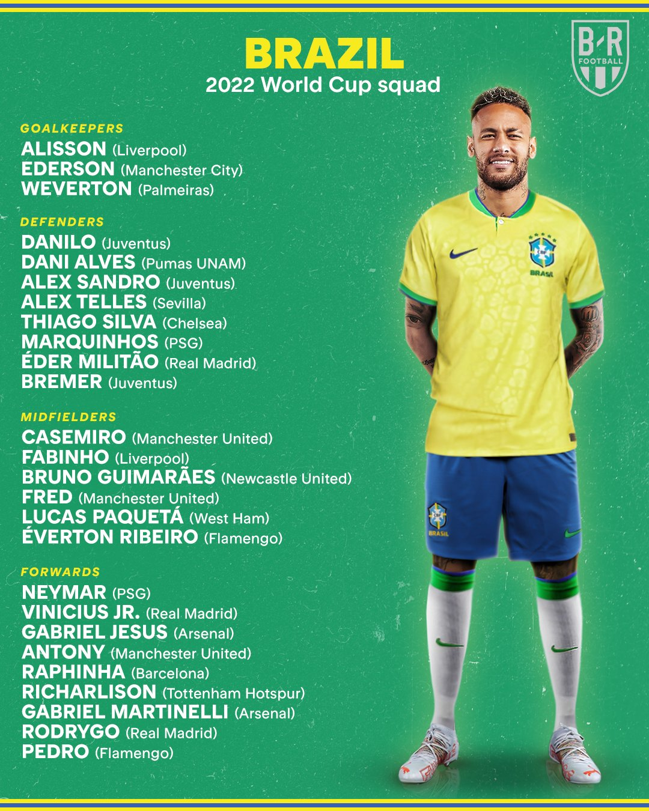

Seleção Brasileira


Description
L'équipe du Brésil de football (en portugais : Seleção Brasileira de Futebol) est la sélection de joueurs brésiliens représentant le pays lors des compétitions internationales de football masculin, sous l'égide de la Confédération brésilienne de football.
La Seleção est l'une des meilleures équipes nationales du monde. Elle détient plusieurs records, et a la particularité d’être la seule sélection à n'avoir manqué aucune phase finale de Coupe du monde. Le Brésil est également le pays qui a remporté le plus de fois le trophée mondial, en 1958, 1962, 1970, 1994 et 2002, sur trois continents différents, mais jamais sur son sol. En 1970, il remporte définitivement le trophée Jules-Rimet, mis en jeu lors de la première édition2. Organisateur du tournoi à deux reprises, en 1950 et 2014, le Brésil connaît deux défaites vécues comme des drames nationaux, face à l'Uruguay 2-1 pour le titre (match surnommé le Maracanaço), et 64 ans plus tard en demi-finale devant l'Allemagne sur le score fleuve de 7-1.
Le parcours de la selection brésilienne lors des eliminatoires de la coupe du monde
Le Brésil a terminé premier du groupe des éliminatoires de la zone Amsud pour la prochaine Coupe du Monde. Néanmoins, ce titre honorifique doit être tempéré. Malgré ses 14 victoires pour seulement 3 matchs nuls (face à la Colombie, l'Argentine et l'Equateur à chaque fois à l'extérieur) en 17 rencontres, la Seleção n'a affronté qu'à une seule reprise son voisin et rival, l'Argentine. Face à l'Albiceleste, la sélection brésilienne n'a pu faire mieux qu'un partage des points et ne s'est donc pas vraiment rassurée face à un concurrent direct au titre final à la fin du mois de décembre. Pour rappel, la première confrontation entre le Brésil et l'Argentine aurait dû être rejouée, mais sa reprogrammation trop tardive — le 22 septembre 2022 — entre deux équipes déjà qualifiées a conduit à son annulation. En effet, le résultat de cette rencontre n'aurait pas eu la moindre incidence sur le classement final du groupe. Depuis, le Brésil a gagné ses quatre matchs amicaux (face à la Corée du Sud, au Japon, au Ghana puis la Tunisie). De bonne augure pour la suite. D'autant plus qu'au Qatar, les hommes de Tite affronteront des adversaires à leur portée lors de la phase de poules. Ils rencontreront la Serbie puis la Suisse et enfin le Cameroun.

Les matches disputés en phase de groupe des qualifications

La liste convoquée du Bresil
